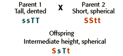

Dihybrid Cross
Problem 11: Incomplete dominance in a dihybrid cross.
Tutorial to help answer the question
| In Mendel's experiments, the spherical seed character (SS) is completely dominant over the dented seed character (ss). If the characters for height were incompletely dominant, such that TT are tall, Tt are intermediate and tt are short, what would be the phenotypes resulting from crossing a spherical-seeded, short (SStt) plant to a dented-seeded, tall (ssTT) plant? |
Phenotype of offspring of an incompletely dominant trait
| All of the offspring would have the genotype of SsTt. Mendel selected traits that did not display partial dominance to study. |  |


University of Arizona
Tuesday, August 13, 1996
Contact the Development Team
http://www.biology.arizona.edu
All contents copyright © 1996. All rights reserved.